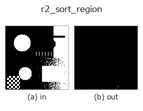

region op• 데이터 종류: region → region
• 호출: fullseye.apply(img, "r2_sort_region", a=0.5, b=0.5)(2-D 는 이미지 1 장 + 스칼라 노브 2 개 a,b∈[0,1] 모델)
• HALCON 대응: sort_region(의미·매개변수는 HALCON 레퍼런스가 참고가 됩니다)

*그림은 128×128 합성 입력에서 실제로 실행한 출력. 왼쪽이 입력, 오른쪽이 출력. 점군은 위에서 본 산점도(밝기 = z), 1-D 열은 꺾은선, 볼륨은 z 방향 최대값 투영, 동영상은 가운데 프레임, 복소 영상은 진폭이며, 그림이 되지 않는 반환값은 값 자체를 표시한다.*
노브 a 를 훑기(0.1 / 0.5 / 0.9, 다른 노브는 기본값):
▸ r2_sort_region: 노브 a 스윕 (문서 사이트)
*노브 b 는 출력을 바꾸지 않는다(실측: 0.1 / 0.5 / 0.9에서 동일).*
단계(앞에 오는 op → 이 op, 왼쪽에서 오른쪽으로):
▸ r2_sort_region: 단계 (문서 사이트)
다른 영상에서도(합성 장면 / 사진 / 동전. 윗줄이 입력, 아랫줄이 그 출력. 노브는 기본값):
▸ r2_sort_region: 다른 입력 이미지 (문서 사이트)
k 번째로 큰 연결 성분만 남깁니다. k = round(a*(n-1)).
전경 마스크(> 0.5)를 scipy.ndimage.label(기본값 4연결)로 연결 성분으로나누고, 면적(화소 수)의 내림차순으로 정렬하여 k번째 성분만 남긴다. k는 round(a*(n-1))를 [0, n-1]로 clip한 정수로, a=0에서 최대 성분, a=1에서 최소 성분, a=0.5에서 대략 중간 순위의 성분. n은 성분 수. b는 사용하지 않는다.
반환값은 입력과 같은 형태의 float64 0/1 마스크. 성분이 없으면 전부 0. 같은 면적의 성분이여럿 있을 때의 순위는 보장되지 않는다(numpy.argsort의 순서에 의존). 성분 수 n이 바뀌면 같은 a라도 선택되는 순위가 바뀌므로(상대 지정), '최대 성분'을 확실히 얻고 싶을 뿐이라면 a=0이나 select_largest를 쓴다. 대각선 접속만으로 이어진 화소는 별개의 성분으로 세어진다(4연결). 전단에 opening_circle로 잘록한 곳을 끊어 두면 성분 단위의 선택이 안정된다.
가장자리 처리: 이미지 바깥은 배경(0)으로 간주한다(실측. tools/impl2/border_probe.py).
• 샘플 데이터 카탈로그(DL URL / 라이선스) —— 2-D 는 skimage.data(BSD/public)+ 합성, 3-D 는 실데이터 소스(Stanford/PDS 등)의 DL URL.
• 연산자의 내력·참고문헌 —— 이 연산자 족의 바탕이 된 연구/기법의 출처.
• 알고리즘의 정전(저자·연도)과 용도는 위의 패밀리 사용 가이드에 적혀 있습니다.
아래 프로그램은 실제로 실행됨을 확인했습니다(그림과 같은 입력). Studio 도움말에서는 이 블록이 버튼이 되어 즉시 불러와 실행할 수 있습니다.
threshold 0.50 0.50 r2_sort_region 0.50 0.50
• gallery2d_region — py -3.11 examples/gallery2d_region.py
region 를 입력으로 받는 것)identity · reg_erode · reg_dilate · reg_open · reg_close · fill_holes · select_largest · remove_small
region)reg_erode · reg_dilate · reg_open · reg_close · fill_holes · select_largest · remove_small · invert_region
*Provenance: ops.py — 2D 연산자 레지스트리. 이 op 노트는 tools/opdocs.py md 가 자동 생성합니다(직접 편집하지 마세요).*
© 2026 Kazufumi Furuse — Fullseye operator documentation. Licensed under Apache-2.0.